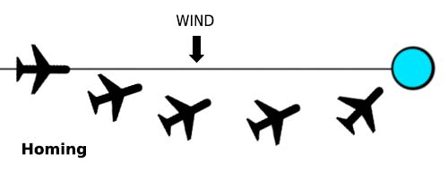
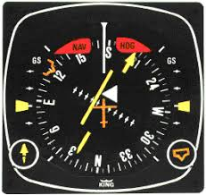

1. Basic Radio Principles
INTRODUCTION TO RADIO WAVES
· Definition
- Radio waves are a type of electromagnetic radiation usually used for communication purposes.
- They have two fields: one electrical and one magnetic
- Radio waves have no mass, and, therefore, travel at the speed of light
· Characteristics of radio waves
|
· Phase difference
|
· Polarization refers to the plane of orientation of the electric field of the wave.
|
· Ideal antenna size is 1/2 of the wavelength. If impossible, use 1/4.
· Polar diagrams
- They are graphs showing the variation in sensitivity of a radio antenna with direction
- Generally, this is the same pattern of energy that the antenna produces when used as a transmitter
- Two main types of polar diagrams:
- Omnidirectional (e.g VOR). Radiation is spread (or received) equally in all directions.
- Directional (e.g WX radar). Radiation energy changes as direction changes
· The Doppler effect.
|
MODULATION
· Modulation
- Usually, the information we want to transmit through radio waves (for example, a voice speech) is too weak to be transmitted by itself. In order to transmit it, we need to use another radio wave that acts as a vehicle, known as "carrier wave".
- The original wave containing the speech is known as "modulating signal".
- Modulation is used to merge the information into the carrier wave. Several types:
- Keying. Transmission is interrupted and restarted. Used in the old days for MORSE transmissions.
- Pulse modulation. Only small bits are transmitted.
- Amplitude modulation. The amplitude of the carrier wave is changed according to the amplitude of the modulating signal.
- Frequency modulation. The frequency of the carrier wave is changed according to the amplitude of the modulating signal.
- Phase modulation. The phase is changed 180º (to transmit 0 and 1)
· Amplitude modulation (AM)
| Image source: electronics-notes.com |
· Frequency modulation (FM)
| Image source: javatpoint.com |
· Advantages of FM over AM
- FM transmitters are simpler and cheaper
- Modulation power required is lower
- Reception is practically static free due to the use of VHF
- Usually horizontally polarized. It suffers less from weather interference
· Disadvantages of FM
- Receivers are more complex
- Because frequency is constantly changing, modulation transmission needs a wider frequency band. There's not enough room on low frequencies
THE FREQUENCY SPECTRUM
| FREQUENCY BAND | ABBREVIATION | FREQUENCY RANGE | WAVELENGTH | USES IN AVIATION |
| Very low | VLF | 3-30 kHz | 100 - 10 km (myriammetric) | |
| Low | LF | 30 - 300 kHz | 10 - 1 km (kilometric) | NDB |
| Medium | MF | 300 - 3000 kHz | 1000 - 100 m (hectometric) | NDB |
| High | HF | 3 - 30 mHz | 100 - 10 m (decametric) | HF R/T |
| Very high | VHF | 30 - 300 mHz | 10 - 1 m (metric) | VOR, LOC |
| Ultra high | UHF | 300 - 3000 mHz | 100 - 10 cm (decimetric) | DME, Glide Slope, SSR, Satellite Communications |
| Super high | SHF | 3 - 30 GHz | 10 cm - 1 cm (centimetric) | MLS, Radio altimeter |
| Extremely high | EHF | 30 - 300 GHz | 1 cm - 1 mm (milimetric) |
2. Radio Wave Propagation
FACTORS AFFECTING PROPAGATION
· Attenuation
- Refers to the loss of energy as a wave travels, caused by:
- Surface attenuation increases with an increase in frequency
- Attenuation greater over land than over sea
- Horizontal polarization is more sensitive to surface attenuation
- Atmospheric attenuation increases with an increase in frequency
- Ionospheric attenuation decreases with an increase in frequency
- Surface attenuation increases with an increase in frequency
· Refraction
- It's the change of direction of the waves when the type of surface over which a wave propagates is changed
- Coastal Refraction.
- Happens when radio waves transition from traveling over land to traveling over water.
- Results in erroneous NDB bearing indications.
- In order to reduce error, the solution is to place NDBs close to the coast.
- The propagation path of the radio waves "bends" towards the coast.
- Atmospheric Refraction
- Caused by changes in the density of different layers of the atmosphere
- Increases with frequency
- Ionospheric Refraction
- Happens in the upper atmosphere, as radio waves are deflected by ions unequally concentrated
- Decreases with frequency.
- Coastal Refraction.
· Reflection
- Waves bouncing back from the ground.
- If two waves out of phase cancel each other out, the received signal will be none. This is known as "fading".
· Diffraction
- Energy is scattered when a wave hits a solid object.
· Propagation path
- Radio waves propagate following great circles.
WAVE PROPAGATION PATHS
Image source: quantumstudy.com
· Surface waves
- A portion of the wave is in contact with the surface of the Earth, hitting it several times
- Every time a wave hits the surface, a bit of energy is lost. Therefore, low frequency waves are able to extend to a wide range.
· Direct / space waves.
- Made up of two paths: a direct wave and a reflected wave
- They travel following the Line of Sight (LOS) from emitter to receiver
- Their maximum range is limited by the curvature of the Earth. R (nm) = 1'23 x (√Tx + √Rx). Other factors such as power also affect the maximum range.
- Used by VHF spectrum and above
· Sky waves
- They travel all the way up to the ionosphere, where they are bent back down to the Earth.
- Their behaviour depends on the state of the ionosphere at that time.
- The ionosphere has several layers: D (day only), E and F.
- During day time, "D" layer appears. Its density is not enough to bend the waves back to the ground, but its enough to absorb radio waves.
- Because of this, MF and LF don't get skywaves during the day.
- VHF and above never receive skywaves.
- The depth of the ionosphere depends on the time of the day, time of the year and solar flare action
- Critical angle: is the minimum angle at which signals are refracted back to the surface.
- More angle will result in increased skip distance
- Less angle will result in no refraction at all
- VHF and above: insufficient refraction. Waves go into space instead of bouncing back, and they are known as Escape Waves
- Definitions
- Dead distance: Distance between last direct wave and first sky wave. No signal is received here.
- Skip distance: Distance between transmitter and first sky wave.
- Maximum range depends on
- Transmitter power
- State of the ionosphere
- Frequency transmitted
- The quality of the receiver
· Summary
- First row mnemonic: ASI (Airspeed Indicator)
- Second row mnemonic: A RADAR
FREQUENCY BAND | ATMOSPHERE | SURFACE | IONOSPHERE | |||
Attenuation | Refraction | Attenuation | Diffraction | Attenuation | Refraction | |
VLF | Lowest | Lowest | Lowest | Highest | Highest | Highest |
LF | ↓ | ↓ | ↓ | ↑ | ↑ | ↑ |
MF | ↓ | ↓ | ↓ | ↑ | ↑ | ↑ |
HF | ↓ | ↓ | ↓ | ↑ | ↑ | ↑ |
VHF | ↓ | ↓ | ↓ | ↑ | ↑ | ↑ |
UHF | ↓ | ↓ | ↓ | ↑ | ↑ | ↑ |
SHF | Highest | Highest | Highest | Lowest | Lowest | Lowest |
PROPAGATION ABNORMALITIES
· Duct propagation
| Image source: electronicsdesk.com |
· Interference
- Unwanted radio energy that impedes correct reception of the intended signal.
- Possible causes are static electricity, obstacles, thunderstorms, mountains, man-made interference, etc
- Signal to noise ratio is a measure of the amplitude of the wanted signal vs the amplitude of any background noise. A high SNR is desirable.
3. Ground Direction Finding (GDF)
INTRODUCTION
· VDF (VHF Direction Finding) was the one of the first radio technologies to be used in aviation. It permits:
|
· VDF is generally not used nowadays because there are better and more precise alternatives.
· Equipment:
- Aircraft: only a working VHF radio is required
- Ground: An antenna with a display
Q-CODES
· The following Q-Codes can be requested by pilots
- QDM. Magnetic bearing to the station
- QDR. Magnetic bearing from the station
- QTE. True bearing from the station.
- QUJ. True bearing to the station.
· Other Q-Codes, used for vectoring, include:
- QDL. Pilot-interpreted sequence of vectors.
- QGH. ATC-interpreted sequence of vectors.
PROCEDURES
· Standard phraseology to request Q-Codes:
- Requests:
- "Birmingham Approach, QDM, QDM, G-BGGA requests QDM, G-BGGA"
- Because VDF only works while aircraft is transmitting, a long and explicit message is required to allow ATCs to check the transmission bearing before the end of the transmission.
- Response includes:
- Q-Code
- Bearing
- Class of bearing
- Time of observation, if required
· GDF accuracy classification
- Class A -> +-2º
- Class B -> +-5º
- Class C -> +-10º
- Class D -> More than 10º
- Normally, no better than class B bearings are available
OTHER TECHNICAL INFORMATION
· VDF range depends on:
- Line of sight limitations
- Power of transmitter and sensitivity of receiver
- Might be increased due to duct propagation
· VDF accuracy depends on:
- Equipment errors
- Site errors (disturbances close to the transmitter)
- Other disturbing elements between transmitter and receiver
- Propagation errors (reflections, refraction, etc)
- Transmission from different aircraft at the same time.
4. Automatic Direction Finder (ADF)
INTRODUCTION
· ADF vs NDB
- ADF (Automatic Direction Finding) is the system on-board the aircraft
- NDB (Non Directional Beacon) is the station on the ground.
- They are used together to provide an aid for navigation and some non-precision approaches.
NON-DIRECTIONAL BEACON (NDB)
· What is an NDB?
- NDBs are ground stations that transmit vertically polarized signals in all directions.
- Aircraft can use this signal to be directed to the ground station.
· NDB Characteristics
- Frequencies used: LF and MF
- Typically 190 kHz - 1750 kHz (enroute NDBs)
- Typically 200 kHz - 500 kHz (locator NDBs)
- Propagation: surface waves
- At night, however, sky waves can be received, causing undesired interference.
- Ranges: 10 nm (locator) - 500 nm (enroute NDBs)
- Power: 25 W - 10.000 W
- Ident
- 2 morse letters for locators
- 3 morse letters for en-route NDBs
- Emission designators:
- N0N A1A
- N0N for thepart of the transmission with is unmodulated
- A1A indicates interrupted unmodulated carrier wave
- N0N A2A
- N0N for the part of the transmission which is unmodulated
- A2A indicates an AM signal which
- N0N A1A
AUTOMATIC DIRECTION FINDER (ADF) PRINCIPLES
· Principle of conventional ADF
- Loop antenna (rotating)
- Remember that, since NDB transmissions are vertically polarized, the electrical component of the wave is oscillating along the vertical plane.
- A constantly rotating antenna receives the signal from the NDBs in two separate vertical elements.
- When the electrical field in both vertical elements is the same, no current will be induced, meaning that the antenna is perpendicular to the radio wave (both ends are at the same distance from the transmitter)
- When the electrical field in both vertical elements is different, a current will be induced. We can conclude that, when current is maximum, the antenna is pointing either towards or away from the station.
- Note that there's an ambiguity. We are unsure whether the station is ahead or behind the antenna at this point. In order to resolve this ambiguity, we need another aerial.
- Because the antenna is rotating, the resulting polar diagram has the shape of an "8"
- Sense aerial (static)
- The polar diagram created by the sense aerial is circular.
- When both polar diagrams are combined, a Cardioid diagram (shape of a heart) is created, resolving the ambiguity of the position of the NDB
- The Cardioid has a zone where power is 0, known as null zone or null point.
· Principle of fixed loop (modern) ADFs
- Formed by fixed loops placed at an angle of 90º
- The current flow created by the wave sets up a magnetic field, which moves a motor connected to the RMI needle.
ADF - DISPLAY AND CONTROL
| · Types of ADF displays | ||
| Relative Bearing Indicator | Relative Bearing Indicator with moving compass | Radio Magnetic Indicator (RMI) |
Fixed compass on the background Only indicates relative bearing | Compass can be manually moved to show QDM If not updated by pilot, instrument shows relative bearing | Compass is automatically updated Shows relative bearing and correct QDM |
· Typical ADF control unit modes:
- OFF. ADF not in use
- ADF. Sense and loop aerial in operation. Bearing is continuously displayed. Used for navigation
- ANT. Only sense aerial is in use. Used for aural station identification
- BFO.
- Used to hear unmodulated transmissions. Required for N0N and A1A waves. Not required on A2A transmissions.
NAVIGATION TECHNIQUES
· Tracking
|
· Homing
|  |
FACTORS AFFECTING NDBs
· Factors affecting useful range of NDB
- Transmission power. Range = √Power (to double the range, increase power by 4)
- Frequency transmitted. Range decreases with an increase in frequency since surface attenuation is greater.
- Type of emission. Unmodulated signal (N0N A1A) has more range
- Surface of propagation. Range is greater over the sea than over land.
· Factors affecting accuracy of an NDB
- Night effect.
- Sky waves out of phase can cause interference and distort received signal
- This interference generally appears at night, when the "D" layer disappears and NDB radiowaves are refracted back down to the Earth
- Detectable by fading of radio signal and unstable needle
- Doesn't occur within 70 - 100 nm from NDB
- Mountain reflection.
- Mountainous areas can cause reflections leading to fading.
- Errors can be diminished by increasing altitude
- Coastal refraction.
- NDB radio wave bends "towards the coast"
- This causes the RMI to point at a heading different from actual NDB
- Can be reduced by flying higher (avoiding surface waves), using NDBs close to the coast
- Static interference.
- Thunderstorms between NDB and aircraft or precipitation hitting the aircraft will cause the needle to move
- Station interference.
- Frequencies can overlap between 2 NDBs, resulting in non-reliable indications.
- Specially dangerous during night, because sky waves from distant NDBs can be received
- Not an issue during day if tuning NDB within the DOC area
- Quadrantal error.
- Error caused by interference from the own A/C structure.
- Maximum errors occur at relative bearings of 045º, 135º, 225º and 315º
- Dip error.
- Small error caused when turning due to the bank angle
- Caused by the fact that NDB waves are not in the same plane as the receiver aerial now, inducing current on top and bottom aerials and distorting the cardioid. Typical error ranges between 5 and 10º
OPERATIONAL TIPS
· Threats associated with NDBs
- No flag is provided if the NDB station suddenly stops transmitting
- Countermeasure is to periodically identify the station to make sure that the needle is pointing where its supposed to.
- No distance indication is provided, which makes it easy to overshoot the NDB without noticing
- Countermeasure is to maintain a correct situational awareness as you approach the NDB, in order to anticipate the arrival overhead
· Magnetic variation
- For NDBs, magnetic variation is applied at the aircraft
- In case of RMI synchronization failure, RMI indicates correct relative bearing
· Overall, ADF bearing accuracy is +-6.9º
· 1 in 60 rule
- For these formulas, assume you are flying with the station at your 3 or 9 o'clock, and notice how fast the bearing changes.
- Formulas are also valid for other navaids, but specially useful for NDBs since they don't have DME
- Time to NDB = 60 x minutes / degrees of bearing change
- Distance to NDB = GS x minutes / degrees of bearing change
5. VHF Omnidirectional Range (VOR)
INTRODUCTION
· What is a VOR?
- A VOR is a radio navaid that provides bearing information relative to magnetic north
· Advantages of VOR
- Free from static interference
- Not affected by sky waves
- Not affected by coastal refraction errors
- Not affected by dip errors
- Not affected by quadrantal errors
- More accurate than NDBs
- Generally co-located with a DME to provide distance information
PRINCIPLE OF THE VOR
· Conventional VOR
- The phase difference between two signals is measured, indicating QDR
- A 30 Hz FM signal is sent in all directions with a constant phase. Known as the reference signal.
- A 30 Hz AM signal is transmitted in a rotating transmission, at a rate of 30 revolutions per second. Known as variphase signal.
- The calculated phase difference is equal to the QDR (magnetic bearing from the station)
- The biggest issue associated with conventional VORs is site error.
· Doppler VOR (DVOR)
- Reference signal is now amplitude modulated
- Variphase signal is frequency modulated
- AM antenna is bigger.
- Site error is reduced
- The same aircraft equipment can be used for either conventional or Doppler VORs
VOR CLASSIFICATION
· Types of VOR stations
- ENRoute VOR: 112.00 - 117.95 MHz. Up to 200 Watts. Max range of 300 nm
- Terminal VOR (TVOR). 108 - 111.95 MHz. About 50 Watts, range around 25 nm
- Broadcast VOR (BVOR). Carries audio information (for example, the ATIS)
- Test VOR (VOT). Used to test A/C equipment on the ground. It transmits 360º radial in all directions.
TRANSMISSION CHARACTERISTICS
· Transmission characteristics
- Polarization: horizontal
- Emission designator: A9W
- [A] AM (Amplitude Modulation), double sideband, full carrier
- [9] Composite, one or more digital channel, one or more analog
- [W] Multiple Formats of Data Transmitted
· VOR frequency range
- VOR operates 160 frequencies between 108.0 and 117.95 MHz
- 40 channels (odd) between 108.0 and 111.95 are allocated to the ILS
- 40 channels (even) between 108.0 and 111.95 are allocated to VOR
- 120 channels between 112.00 and 117.95 MHz
- A frequency is designated as odd or even acrroding to its first decimal. Therefore, 111.10 and 111.15 are both ODD, whereas 111.20 and 108.60 are both EVEN.
MONITORING
· VOR monitor
- It's a device that monitors VOR signal and automatically switches the VOR off in case of:
- Change in bearing of more than 1º
- Signal not being powerful enough
- Monitor itself not working
INDICATIONS
| · Typical VOR displays | ||
|  | ||
| Radio Magnetic Indicator (RMI) | Course Deviation Indicator (CDI) | Horizontal Situation Indicator (HSI) |
Needle points toward the VOR | Selected course on top Can be misleading since indications don't follow aircraft heading Total scale deflection indicates difference of 10º or more from selected radial | Aircraft heading on top Selected course on the needle Intuitive indications regardless of aircraft heading Total scale deflection indicates difference of 10º or more from selected radial |
OPERATION
· Failure flags
- VOR receivers are equipped with flags to indicate either:
- Failure of the receiver
- No signal being received
· Cone of confusion
- Is an area above the VOR where the signal is not received.
- RMI will not work properly in this area therefore.
- Area expands with increasing altitude (shape of an inverted cone)
· For VORs, magnetic variation is applied at the station.
FACTORS AFFECTING VOR RANGE AND ACCURACY
· Factors affecting operational VOR range
- Transmitter power
- Duplicating range requires a 4x increase in power
- Line of sight limitations
- Remember that maximum theoretical range = 1.23 x (√Htx + √Hrx)
- Designated Operational Coverage (DOC)
- They are published zones where a VOR is safe to use without interference from other stations in similar frequencies.
- Nature of terrain
· Factors affecting VOR accuracy
- Site error
- Obstacles in the vicinity of the transmitter can distort the received phase difference
- Mainly affects conventional VORs
- Propagation Error.
- Irregularities in the terrain that can lead to bend (slow fluctuations) or scalloping (needle goes crazy)
- Airborne Equipment Errors
- Modern aircraft equipment have a very high accuracy
- Interference errors
- Can be avoided if using VORs within the DOC
· Overall, VOR accuracy is +5º for 95% of the time.
6. Instrument Landing System (ILS)
INTRODUCTION
· What is the ILS?
- The ILS is the most commonly used guidance for final approach and landing
- The system provides lateral and vertical guidance
- Most accurate systems can even provide guidance down to runway surface with no decision height at all
CHARACTERISTICS OF THE RADIO TRANSMISSION
· Characteristics of the radio transmission
- Polarization: horizontal
- Emission designator: A8W
- [A] Double-sideband amplitude modulation
- [8] More than one channel containing analog information
- [W] Multiple formats of data transmitted
ILS COMPONENTS
· Localizer
- Provides horizontal guidance
- It's frequency is shown on the plates and tuned by pilots.
- Works in the VHF band.
- 40 channels: odd frequencies between 108 and 111.975 MHz
- Transmitter is located 300 meters beyond the far end of the runway
· Glideslope
- Provides vertical guidance
- It's frequency is paired to the localizer frequency, so that pilots only need to tune the localizer
- Works in the UHF band.
- Range between 329.15 and 335 MHz
- Generally located at the right side of the runway threshold (300 m from threshold, 200 m from runway edge)
· Markers
- They are beacons that provide checkpoints. Generally three markers available:
- Outer maker. Consists of dashes. 2 per second. 400 Hz. Blue
- Middle marker. Mix of dots and dashes. 3 per second. 1300 Hz. Amber
- Inner Marker. Dots. 6 per second. 3000 Hz. White.
- They transmit at 75 MHz
· DME
- ILS systems are generally accompanied by DME stations
- When DME is available, markers may not be provided
DESIGN OF ILS SYSTEM
· Localizer
- Localizer transmits two amplitude modulated lobes
- Left lobe modulated at 90Hz and right-hand lobe at 150 Hz
- When lobes are received with equal depth, the needle will be centralized.
· Glideslope
- Glideslope transmits two amplitude modulated lobes
- Upper lobe at 90Hz. Lower lobe at 150 Hz
- No identification signal required because localizer ident is sufficient since frequencies are paired
· Service Area of the Localizer (ICAO)
|  Image source: nordian.net |
· Service Area of the GS (ICAO)
| Image source: nordian.net |
BACKBEAM LOBES
· Backbeam lobes
- Backbeam lobes can be used for non precision approaches on the opposite runway to which the ILS is suppossed to serve.
- Threats:
- No glideslope
- Less accuracy
- No markers
- Indications are reversed unless electronically processed by aircraft equipment
MONITORING
· ILS indications
- LOC: Full scale is 2.5º left or right of the centreline.
- GS. Full scale is 0.7º above or below the glidepath
- For an approach to be stable, deflection must be within half-scale. Otherwise, go around.
· ILS Flag Alarms
- NAV flag comes out if LOC is not received
- GS flag comes out if GS signal is not received.
- If aircraft is outside of the ILS area, transmission is faulty or airborne equipment isn't working, flags will be visible.
ERROR AND PREVENTION
· LOC and GS errors
- Local FM broadcasts just below 108 MHz can cause interference with ILS transmitters. This can be overcome with good quality receivers
- Scalloping (rapid movement of the needles) can be caused by reflections
- Bends (slow movements of the needles) can be caused by atmospheric interference
· False Glide Slopes
- Standard glide path is 3º
- However, reflections and glideslope system construction causes false glideslopes to be transmitted at multiples from the intended glideslope (e.g, 6º, 9º)
- When capturing a glideslope from above, special awareness must be held and altitudes must be cross-checked with distance indications to ensure that aircraft is not established in a false glideslope
· ILS Monitors
- Like VORs, ILSs also have monitors that detect malfunctioning systems
- If innacuracy in LOC or GS is detected, a second transmitter is brought alive if available.
- If not available, transmission will be stopped.
OPERATION
· ILS Operational Facilities Categories
- CAT I. Accuracy to 200 ft above the runway. DH down to 200 ft
- CAT II. Accuracy to 50 ft above the runway. DH down to 100 ft
- CAT III. Accuracy down to the runway itself. DH down to 0 ft. Note that there are three subcategories (CAT III A, CAT III B, CAT III C)
· ILS Sensitive and Critical Areas
- Aircraft between the transmitters and receivers can cause undesired reflections, distorting the ILS-guided lateral and vertical path.
- This can be critical when special accuracy is needed due to low visibility
- Therefore, when LVP are in use (CAT II or CAT III), sensitive and critical areas must be free of aircraft or vehicles.
OPERATIONAL TIPS
· Using 1 in 60 rule to estimate the glideslope height at a given distance from runway threshold
|
· Using 1 in 60 rule to estimate the rate of descent, for a glideslope of a given angle
- Rate of descent (ft/min) = angle x 100 x GS/60
- For a 3 degree glideslope:
- ROD = 3 x 100 x GS / 60 = 5 * GS
- Therefore, for a groundspeed of 100 knots, your approximate rate of descent is 500 ft / min
7. Microwave Landing System (MLS)
INTRODUCTION
· What is MLS?
- MLS is a landing system that provides precision guidance
· Why was MLS developed?
- MLS was intended to deal with some of the limitations of the ILS.
- MLS permits:
- Possibility of curved and segmented approaches
- The implementation of multiple approach and glide paths with the same MLS ground station
- Lower interference with other navaids in the vicinity due to the fact that MLS uses higher frequency bands
- Higher lateral, vertical and range than ILS
- Larger number of channels available
- Data transfer
· Why was MLS not successful?
- MLS requires complex (and expensive) receivers on board the aircraft
- As a result, very few airlines adopted this new landing system
- Furthermore, its advantages were already satisfied by either CAT II / III ILS, or the appearance of RNAV / RNP approaches
- Having an MLS receiver on board is, in practice, no advantage at all.
HOW MLS WORKS
· Frequency range
- MLS works in SHF band (range 5031 - 5090.7 MHz)
· MLS components
- Approach azimuth transmitter
- Back azimuth transmitter may also be required in order to provide guidance on the missed approach or departure segments.
- Approach elevation transmitter
- Precision DME. Accurate to +-100 ft. If the precision DME fails, the MLS will work as an ILS and will only be able to provide straight guidance.
- Data transfer equipment
· Principle of operation
- Uses Time Reference Scanning Beam (TRSB) to determine aircraft position (laterally and vertically).
- The transmitters produce narrow beams that sweep back and forth across their area of coverage.
- Aircraft equipment computes the time difference between "to" and "from" beams. Along with a distance, this is enough to determine aircraft position.
· MLS Accuracy
- Lateral: +- 15 m
- Vertical: +- 3.7 m
8. Basic Radar Principles
BASIC RADAR PRINCIPLES
· Principle of operation
- Radar systems measure the time a spike takes to go forward and return to an aircraft.
- By measuring time, and taking into account that the speed of light is 3 * 108 m/s, we can calculate distance
- Radars generally operate on UHF and SHF bands
- A beam takes 12.36 μs to go and return per mile.
- Beam-width is proportional to Wavelength/Antenna Size
· Definitions
|
· Effect of power on max range
- Power⁴ = Range
THEORETICAL RANGES
· Maximum theoretical range
- When a pulse is transmitted, it has to return before the next pulse is transmitted
- Therefore, max range is limited by PRI
- Max range = C * PRI / 2
- C = Speed of light (3 × 108 m/s)
· Minimum theoretical range
- Pulse radars share transmitter and receiver antenna
- If the antenna is transmitting, it can not receive any echo
- Therefore, minimum range is limited by pulse length.
- In other words, it's the shortest time at which an echo can be received
- Min range = C * pulse length / 2
· Range resolution
- Separation between targets to be displayed separately.
- It's equal to the minimum range.
ADDITIONAL RADAR THEORY
· Effect of beam width on azimuth resolution.
- The narrower the beam, the more accurate the radar is.
· Effect of wavelength on attenuation
- Shorter wavelengths are used when they are meant to be reflected in small particles (water).
- Shorter wavelengths suffer from attenuation.
- Larger wavelengths used when we want echoes to be reflected on big structures. Less attenuation.
· Factors affecting radar characteristics
- Range and power. More range, more power required
- Power and wavelength. Less wavelength involves more frequency, and therefore, more power.
- Range and PRF. Long range requires low PRF, in order to give the pulses enough time to return.
- Beam width and aerial dimensions. Narrow beams are preferable, achieved with bigger antennas.
- Antenna and aircraft height. Low and distant aircraft will be under Earth's shadow, impeding line-of-sight transmission.
- Range and pulse length. Short pulse lengths are preferable for short distances.
- Weather penetration and wavelength. The longer the wavelength, the most likely it's going to penetrate weather.
· Continuous wave radar
- One antenna is used for transmitting and another separate antenna is used for receiving
- Uses Doppler effect to measure range or speed, therefore, frequency modulated
- No minimum range since an antenna is always listening
· Moving target indicator
- Displays echoes of moving targets by detecting the Doppler shift
- Stationary objects are therefore not displayed (decluttered)
· Rejection of rain clutter
- Achieved by circular polarization
PRIMARY VS SECONDARY RADAR
· Primary and secondary radar.
- Primary radars are based on reflected energy (e.g Airborne Weather Radar, Radio Altimeter, etc)
- Secondary radars rely on the target to reply to the transmission. A second transmission required, operating on a different frequency.
· Advantages of primary radar
- Doesn't require the cooperation of the target.
· Advantages of secondary radar.
- Lower power required for a given range
- Smaller aerials can be used
- False echoes can be eliminated
- The strength of the replies doesn't depend on the reflection properties of the target
- The replies can be coded to convey information.
TYPICAL FIGURES OF AVIATION RADARS
· Ground radar used by ATC
- Long Range Surveillance radar used for surveillance of airways. 200 - 300 nm range
- TMA Surveillance Radar used for surveillance of airport proximity. 75 - 90 nm
- Aerodrome Surveillance Radar used for vectoring to the final approach. 25 nm
- Surface movement radar used for vehicles moving on the apron. 2.5 nm
9. Airborne Weather Radar (AWR)
INTRODUCTION
· Principle
- Water droplets in the atmosphere return radar echoes
- In those areas where thunderstorms are being developed, a high concentration of water droplets exists, leading to strong returns which can be interpreted as dangerous areas
DESIGN
· Radar type: Primary (pulses are echoed by water droplets)
· Components
- Transmitter / receiver
- Antenna
- Control unit
- Display
· Wave characteristics
- Frequency: 9'75 GHz (SHF spectrum)
- Wavelength. 3 cm
- Beam-width. 3'5 - 5º
· Antenna types
- Parabolic antenna. Used in the old times
- Flat-faced phased array antenna. Flat antenna, providing a narrower beam and reduced side lobes. Higher range because energy is not wasted on side lobes.
· Weather radars can be tilted up and down.
- Modern aircraft have antenna stabilization, which means that tilt angle is measured against the horizon.
- Aircraft without antenna stabilization measure tilt against the longitudinal axis.
RADAR DISPLAY MODES
· Display modes
- Gain. Decides the amount of amplification of the echoes as shown on the display
- STC (Sensitivity Time Control). Automatically increases the gain of distant echoes, to compensate for attenuation.
- TEST. Self-explanatory
- WX. Echoes are reflected by water droplets.
- WX / TURB. Uses the Doppler principle to detect turbulent zones. Range decreased to about 50 nm.
- MAP. A cosecant beam is transmitted, to scan the ground. Range 70 nm
- MAN. Conical beam with manual gain control and no STC.
10. Secondary Surveillance Radar (SSR)
INTRODUCTION
· Why primary radars aren't enough
- Primary radars are used for airspace surveillance and defense, but they lack aircraft identification.
- They also require higher transmitter outputs
· Secondary Surveillance Radar
- Requires a transponder to be equipped in aircraft
- The ground station (interrogator) sends interrogations to aircraft
- Aircraft replies to those interrogations through the transponder.
- Advantages:
- Less power required
- Identifies aircraft
- Uses a squawk code which can also inform the tower of a communications failure, emergency or unlawful interference.
SECONDARY SURVEILLANCE RADAR SYSTEM DESIGN
· SSR Modes
- Mode A. Transmits aircraft position and squawk code
- Mode C. Transmits aircraft altitude
- Mode S. Enhanced altitude transmission and TCAS among other benefits.
· Additional functionality
- ADS-B. Used in modern ATC surveillance: aircraft downlinks GPS position
· Interrogation process
- Interrogator transmits three pulses (P1, P2 and P3) at a frequency of 1030 Hz
- For Mode A interrogations, PRI between P2 and P3 is 8 μs
- For Mode C interrogations, PRI between P2 and P3 is 21 μs
· Reply process
- Transponder processes the interrogation (delay of 50 microseconds) and responds at a frequency of 1090 Hz
- Reply consists on two framing pulses (F1 and F2) 20.3 microseconds apart
- (MODE A) Up to 12 information pulses can be transmitted between F1 and F2.
- They can be transmitted or not depending on squawk code.
- There are 4096 possible codes (0000 - 7777)
- When IDENT is pressed, a further pulse is transmitted (special pulse identification) and aircraft position flashes on ATC screen.
- Special codes:
- 7700. Emergency
- 7600. Radio failure
- 7500. Unlawful interference
- (MODE C)
- Transmits altitude in intervals of 100 feet to a maximum of 128.000 ft
- Always based on 1013.2 hPa
- If more than 300 ft discrepancy between pressure altitude and transmitted altitude, ATC will instruct pilot to switch off mode C.
PILOT INTERFACE
· Selector Switch modes
- OFF.
- STBY. Power on. System doesn't reply to received interrogations.
- ON. Mode A selected, system replies to mode A interrogations.
- ALT. Mode C selected, system replies to mode A and C interrogations
- IDENT. Aircraft is highlighted on radar for 20 seconds
- TEST
· Note that Mode S is not selectable.
ADDITIONAL INFORMATION AND LIMITATIONS
· Side lobe suppression
- P2 (another pulse) is sent to the side lobes. If P2 is received at greater amplitude than other lobes, the aircraft knows it's on the side lobe, so it won't reply.
- The second pulse is transmitted 2 μs after P1
· Mode A/C limitations
- False Responses Unsynchronized In Time (FRUIT)
- Interference that occurs when an interrogator receives a reply to interrogations from another interrogator.
- Garbling
- If 2 aircraft are within 1.7 nm, their replies are said to be garbled, as their replies overlap.
- Shielding.
- Means that the own fuselage can "shadow" the antenna during a turn.
- Antennas are placed in the upper and lower fuselage to overcome it.
- Saturation.
- Mode A is limited to 4096 modes.
MODE S
· Mode S overview
- Greater data capability (data-link)
- Every aircraft has a permanent adress of 24 bits. A total of 16.700.000 codes are available for allocation to individual aircraft.
- Interrogations are individually addressed, eliminating fruiting and garbling.
- TCAS can coordinate evasive manoeuvres
- Better height readout (accuracy of 25 ft)
· Mode S Interrogation modes
- Mode S only - All Call. Establishes a connection between radar and new aircraft within radar coverage.
- Broadcast. Transmits information to all mode S transponders. No reply needed
- Selective. Interrogates individual aircraft using their known addresses.
- Intermode
- Mode A/C/S call. Mode A/C aircraft will respond in the normal manner. Aircraft fitted with mode S, however, will recognize the long P4 pulse and respond with a mode S reply.
- Mode A/C-only all call. All aircraft respond using modes A or C. Aircraft with S mode recognizes the short P4 pulse and do not respond using S mode.
· Elementary surveillance
- Provides position, altitude and identification.
· Enhanced surveillance
- Provides aircraft current state vector information (IAS, Mach, G/S, track, magnetic heading, turn rate, roll angle, vertical speed, and true track)
- In the future, information to indicate the future path, selected altitude and barometric setting will allow controllers to use Short Term Conflict Alert.
11. Distance Measuring Equipment (DME)
INTRODUCTION
· What is a DME?
- A Distance Measuring Equipment (DME) is a ground station intended to provided distance only information.
- It is generally co-located with VOR / DME, so that, when used in conjunction, pilots can determine their position.
· Advantages of DME
- It's the most accurate conventional navaid in use.
- In fact, when GPS is not available, modern avionics rely on DME rather than other navaids to determine its position.
DME DESIGN
· Characteristics
| VOR-DME frequency pairing table |
· Principle
|
AIRCRAFT EQUIPMENT
· Aircraft equipment can operate in several modes
- Search mode.
- The aircraft interrogates everywhere to see if any ground station replies.
- Aircraft initially transmits 150 pulse pairs per second.
- After 15.000 pulse pairs, the rate is to a rate of 60 pps.
- Tracking mode.
- PRF varied between 24-30 pps
- Transmission optimized for reception of emitted pulses according to estimated distance to ground station
- Memory mode.
- If the interrogator momentarily loses connection with the ground station, this mode kicks in
- The aircraft equipment will use this mode for 10 seconds, showing the distance increasing or decreasing at the same rate it was before the loss of signal
- If, after 10 seconds, connection has not been re-established, the equipment reverts to search mode.
- Auto standby.
- When, after a prolonged time, no responses are being received, the equipment stops transmitting and simply listens for any other responses in the area.
- If other responses are detected, the system is aware that a DME station is within range and switches back to search / tracking modes.
LIMITATIONS
· Beacon saturation
- DME ground equipment can only reply to 2700 pulse pairs per second
- This means that approximately only 100 aircraft can simultaneously use the same DME
- If ground station becomes saturated, it automatically reduces gain to reply only to closest 100 aircraft.
· Accuracy of DME
- Total error limited to +-0.25 nm + 1'25% of distance to station
· Range of DME
- UHF, so limited by line of sight
- Max range = 1'23 (√Tx + √Rx)
· Slant range
- DME equipment shows the slant (three dimensional) distance between station and aircraft.
- Therefore, when being over the station, at approximately 6000 ft, DME will read 1 nm
- Maximum inaccuracy occurs right above the DME. This is not an error of the system itself.
- Inaccuracy is considered negligible when separated more than 1 nm for each 1000 ft.
- This means that, if you are at 8000 ft, as long as you are farther than 8 nm from the DME, you can consider the reading to be horizontal distance.
FREQUENCY SPECTRUM
· DME Frequencies
- 962 - 1213 MHz (UHF)
- 252 channels (126X + 126Y)
- X channels pulse spacing is 12 μs
- Y channels pulse spacing is 36 μs
· Frequency pairing (VOR and DME)
- Associated if either co-located or within 100 ft for terminal or 2000 ft for en-route VOR. Every 30 seconds, 3 VOR idents at 1020 Hz and 1 DME ident at 1350 Hz.
- Not associated if between 2000 and 6 nm distance. They're frequency paired, but the last letter of one identifier will be Z.
- If further than 6 nm, VOR and DME must have different callsign and frequency.
OTHER APPLICATIONS
· TACAN
- Military-only navaid, from which civilians can use DME by dialing a ghost VOR frequency
12. Global Navigation Satellite System (GNSS)
INTRODUCTION
· What is GNSS?
- Global Navigation Satellite System (GNSS) is a system that allows position determination
- In all cases, it uses signals transmitted from a constellation of satellites
- There are several GNSS solutions developed by different countries, but, in all cases, the principle is the same. For this reason, it is important not to confuse the term GNSS (generalistic) with GPS (specific to the USA)
· Main world systems
- Navstar GPS (USA)
- Glonass (Russia)
- Galileo (European)
- Beidou (China)
PRINCIPLES OF THE SYSTEM
· Principle of GNSS
- A receiver measures the amount of time a radio wave takes from a satellite to the receiver
- By measuring time, and assuming that radio waves travel at the speed of light, the distance between satellite and receiver can be calculate
- If we know the distance from a few satellites to the receiver, we can determine the receiver position
· Position determination in 2D
|
· Position determination in 3D
|
· Pseudo-range
- Pseudo-ranges are obtained by multiplying the time taken for each signal to reach the receiver by the speed of light
- Keep in mind that waves travel at a speed of 300.000 km/s
- An error of one milisecond involves an inaccuracy of 300 km
- For this reason, satellite clocks are atomic
- Because inaccuracy errors in the time measured are unavoidable, the term pseudorange is used
NAVSTAR GPS
· Service levels
- Standard Positioning Service (SPS) - for general usage
- Precise Positioning Service (PPS) - restricted for military usage
· Three segments
- Space
- Control
- User
· GPS uses the WGS84 model.
SPACE SEGMENT
· Consists of
- 24 operational satellites with orbits inclined 55º to the Equator
- They are in nearly circular orbits at 20.000 km
- Orbit period is 12 hours, so they complete 2 orbits per day
- Satellites are distributed in 6 orbital planes with at least 4 satellites each.
· Ranging signals are transmitted on 2 frequencies in the UHF band:
- L1 - 1575'42 mHz. 2 codes transmitted, C/A and Precision.
- Used for SPS and PPS
- L2 - 1227 mHz.
- Only used by PPS
· Ranging signals contain 2 types of messages
- Coarse Acquisition
- It's a pseudo random noise (PRN) code sequence, repeating every milisecond, used to identify each satellite.
- The navigation message
- Almanac Data. Orbital data about all the satellites in the GPS constellation. Takes about 12.5 minutes to download.
- Ephemeris. Data used to correct the orbital data of satellites due to disturbances.
- Satellite clock correction parameters.
- UTC parameters. Factors determining the difference between GPS time and UTC.
- Ionospheric Model used to calculate the time delay of the signal through the ionosphere.
- Satellite health data used to execute faulty satellites from usage.
CONTROL SEGMENT
· Composed by
- A master control station
- A back-up control station
- 5 monitoring stations
· The main tasks of the control segment are
- Monitoring satellites
- Managing SPS performance
- Uploading navigation data
USER SEGMENT
· Types of GPS receivers
- Sequential receivers.
- They can only track 1 satellite at a time
- Cheap receivers, but not suitable for aircraft since accuracy is lost.
- Multiplex receivers.
- Fast rate of sequencing between satellites being tracked.
- They read the NAV message completely, but again, not accurate enough.
- Multi-channel receivers.
- They monitor several satellites simultaneously, known as "all-in view capability"
- Most accurate, so used in aviation.
· Receivers are able to calculate groundspeed using the Doppler frequency shift.
____________________________________________________
GLONASS
SPACE SEGMENT
· Satellite distribution
- 24 satellites in total
- Distributed in 3 orbital planes, with 8 satellites each.
- Satellites are equally displaced by 45º of latitude
- Orbits at 19.100 km, with an inclination of 64.8º to the Equator.
CONTROL SEGMENT
· Provides
- Monitoring of the constellation status
- Correction of orbital parameters
- Navigation data uploading
USER SEGMENT
· Time reference is UTC
· The datum used is PZ-90
- This is an Earth-centered and Earth-fixed model
· Frequencies
- L1 (1600 mHz, for civilians)
- L2 (1200 mHz, for military)
· Navigation message lasts 2 seconds and contains
- Immediate information, relating to the own satellite
- Non-immediate information, relating to other satellites
· Immediate data consists of:
- Enumeration of the satellite time marks
- Difference between onboard time scale and that of the satellite time
- Relative differences between carrier frequency of the satellite and its nominal value
- Ephemeris parameters
· Non immediate data consists of
- Data of all the satellites within the space segment
- Coarse corrections to onboard time scales of each satellite relative to GLONASS time
- Orbital parameters of all satellites within the segment
- Correction to GLONASS time relative to UTC.
· Integrity monitoring
- Continuous automatic monitoring of principal systems. If a malfunction occurs, an unhealthy flag is transmitted on the immediate data.
- Special tracking stations on the ground are used to monitor space segment performance. If a malfunction occurs, unhealthy flag is transmitted.
____________________________________________________
GALILEO
· Satellite distribution
- 30 satellites (9 plus a space replacement satellite spread in 3 orbital planes)
- Circular orbits at 23222 km, inclined 56º from the Equator
- Orbit period is 14 hours
- Frequency bands:
- 1164 - 1215 mHz
- 1260 - 1300 mHz
- 1559 - 1591 mHz
· Each satellite has 3 sections
- Timing
- 2 clocks: Rubidium Frequency Standard and a Passive Hydrogen Maser.
- Signal generation
- Signal consisting of ranging code identifier and navigation message (which contains ephemeris data and the clock references)
- Transmission
- Navigation message up converted on four navigation signal carriers and outputs combined in a multiplexer before transmission.
· Monitored in a similar way to NAVSTAR and GLONASS, plus a new method based on spread spectrum signals.
· The tracking, telemetry and command operations are controlled by sophisticated data encryption and authentication procedures.
· GPS, EGNOS and GALILEO are compatible.
SUMMARY
System Developer | Space segment | Transmitted data | Frequencies | Monitoring | Other information Earth Model | |
GPS USA | · 24 satellites · Orbits inclined 55º to the Equator · Orbit height: 20.000 km · Orbit period: 12 hours · Satellites distributed in 6 orbital planes | · Coarse Acquisition
· Navigational message
| (L1) 1575'42 MHz
(L2) 1227 MHz
| · Control segment provides constellation monitoring and navigation data management | WGS84 | |
GLONASS Russia | · 24 satellites · Orbits inclined 64.8º to the Equator · Orbit height: 19.100 km · Orbit period: 11 hours and 15 minutes · Satellites distributed in 3 orbital planes | · Immediate data - regarding own satellite · Non-immediate data - regarding the constellation | (L1) 1600 MHz - civil use (L2) 1200 MHz - military use | · Control segment provides constellation monitoring, correction of orbital parameters and navigation data uploading · Continuous automatic monitoring of principal systems. · If failure occurs, "unhealthy" flag transmitted on nav data message. | PZ90 | |
GALILEO Europe | · When fully operational, Galileo will have 30 satellites · Orbits inclined 56º to the Equator · Orbit height: 23.200 km · Orbit period: 14 hours · Satellites distributed in 3 orbital planes | · Code identifier · Navigation message | · The Public Regulated Service:
| · Monitoring similar to NAVSTAR and GLONASS, plus a new method based on spread spectrum signals | Galileo Terrestrial Reference Frame (GTRF) |
____________________________________________________
GPS ERRORS
· Ionospheric propagation delay
- The ionization of the ionosphere affects radio waves traveling through it.
- This is the most important error of the GPS system.
- However, can be predicted with high accuracy.
- Error can be reduced by using 2 frequencies (PPS)
- Overall error depends on the time of the day, year, season, frequency, etc
· Ephemeris errors
- Errores in the calculation of the position of the own satellites.
- Ground stations monitor satellites to ensure that satellites correct their navigation message or trajectory according to this error.
· Position dilution of precision
- Happens when satellites are too close from each other. It's preferential to use well separated satellites since their "spheres" will cut each other at right angles.
- PDOP < 6 required for enroute navigation, and <3 required for non-precision approaches.
· Multipath.
- Receivers have a masking function in order to not receive signals of satellites located below 7'5º against the horizon, since those signals are likely to suffer from multipath reflections.
· Clock errors.
- Atomic clocks are used in satellite vehicles to improve satellite clock accuracy
- Satellite clock accuracy is monitored by ground stations
· Receiver noise
- Thunderstorms, internal noise caused by own receiver.
· Tropospheric propagation error
- Variations in the state of the atmosphere can slow down the traveling of radio waves, affecting position calculation.
AUGMENTATION SYSTEMS
· What are augmentation systems?
- Augmentation systems are additional systems designed to improve GNSS accuracy, allowing for even CAT I precision approaches to be flown using GPS as the guidance provider.
- There are several systems of differential GPS (GBAS, SBAS, ABAS)
· Ground Based Augmentation System (GBAS)
- A station, with a fixed position on the ground, measures the signal errors and relays the measured error to the users for correction
- Uses VHF datalink in the VOR band (108 - 117.95 MHz)
- Station coverage is about 30 km
- If several GBAS stations are interconnected, they provide coverage to a bigger region, forming what's known as a GRAS (Ground Regional Augmentation System), extending coverage.
- GBAS can provide
- Precision approach service (CAT I).
- GBAS positioning service. Horizontal position information to support RNAV
- Minimum GBAS coverage
- 15 nm from landing point within 35º deviation
- 15-20 nm from landing point within 10º deviation
- GBAS is known as LAAS in USA (Local Area Augmentation System)
- Differential corrections applied to a satellite signal
- Regional service providers to compute the integrity of the satellites
- Extra accuracy for extended coverage around airports
· Satellite Based Augmentation System (SBAS)
- A station on the ground measures the signal errors and transmits differential corrections and integrity messages for navigation satellites
- This message is transmitted to geostationary SBAS satellites, from which they are broadcasted down to aircraft.
- The frequency band of the data-linked message is identical to that of the GPS signals.
- The use of geostationary satellites enables messages to be broadcast over very wide areas. This is the main advantage of this system compared to GBAS.
- 3 elements
- The ground infrastructure
- The SBAS satellites
- The SBAS airborne receivers
- SBAS measures the pseudo-range error and provides corrections for ephemeris, clock and ionospheric errors
- SBAS can provide approach and landing operations with Vertical guidance and precision approach service
- Coverage area
- Wide navigation service
- Service area
- Approaches
- Examples of SBAS implementations around the world.
- EGNOS (European Geostationary Navigation Overlay Service)
- 3 geostationary satellites that improve accuracy to 1-2 m horizontally and 3-5 m vertically
- Integrity and safety improved by alerting users within 6 seconds after malfunction
- WAAS (Wide Area Augmentation System)
- MSAS (Multi-functional Satellite Augmentation System)
- GAGAN (GPS Aided Geo Augmented Navigation)
- EGNOS (European Geostationary Navigation Overlay Service)
· Airborne Based Augmentation System (ABAS)
- Uses redundant elements within the GPS constellation and the own aircraft instruments to control integrity (e.g, the altimeter)
- If system only uses GNSS information, it's known as RAIM (Receiver Autonomous Integrity Monitoring)
- If receiver uses on-board sensors, it's known as AAIM (Aircraft Autonomous Integrity Monitoring)
- ABAS doesn't improve accuracy; it only checks the integrity.
13. PBN (Performance Based Navigation)
INTRODUCTION
· What is PBN?
- Performance-Based Navigation (PBN) involves a new means of defining airspace and navigation requirements, switching from sensor (equipment) based to on board equipment's performance based
· Why has PBN been developed?
- Reduces the need to maintain sensor-specific routes and procedures (less navaid maintenance expenses)
- Avoids the need for development of sensor-specific operations
- Allows for more efficient use of airspace
- Facilitates the operational approval process for operators.
· Main differences from conventional navigation
- Conventional is sensor-based; PBN is performance based.
- Conventional is read from raw data; PBN is read from computed data.
- Conventional has no performance monitoring; PBN does in RNP airspace. More on that later.
· Operational approval.
- Operators must demonstrate compliance with:
- Airworthiness. Aircraft must meet the requirements defined by authorities.
- Continued airworthiness. Aircraft are expected to continue to meet the requirements.
- Flight operations. Flight crew must receive specific training. Aircraft database also has to meet some requirements.
- DOC 9613 states that all RNP procedures require approval and are operator dependent.
PBN INFRASTRUCTURE
· PBN System requirements are defined in terms of:
- Accuracy. The ability of the system to determine the exact aircraft position.
- Integrity. Involves the ability to detect system degradation and provide warnings when required performance is not being met.
- Availability. Defined as the percentage of time the services of a navigation system are accessible.
- Continuity. The ability of the system to provide prolonged and interrupted service during its intended time of operation.
- Functionality. Different receivers may be certified to a different airspaces and procedures. Each operator can use and certify their avionics as required on its expected operation.
· PBN systems
- PBN is composed by two different systems: RNAV and RNP
- RNAV systems can compute your aircraft position to some level of accuracy
- RNP systems must:
- Compute your aircraft position to some level of accuracy
- Compare it to the specified Required Navigation Performance for the airspace your are flying
- Generate alerts if Required Navigation Performance is not being met. This is the biggest difference from RNAV
· PBN Components
- The Navaid Infrastructure (GNSS, IRS and conventional navaids like VOR, ILS, DME, MLS)
- These allow determination of the aircraft position.
- Note that, even if GNSS signal is lost, aircraft may be able to continue to meet navigation requirements using on-board systems (like IRS) or conventional navaids.
- The Navigation Specification
- Authorities establish a required level of performance to be achieved by the RNAV / RNP system
- RNAV-X / RNP-X airspace means that aircraft system must be able to calculate the position with an accuracy of +-"X" nautical miles during 95% of the time
- Example: for RNP 2 airspace, aircraft must have an accuracy of 2 nm during 95% of the time
- Along with the total error, different airspace requirements also involve different redundancy and systems required:
- For example, RNAV 10 requires that aircraft operating in oceanic and remote areas be equipped with at least two independent and serviceable long range navigation systems (LRNS)
- However, RNP 4 requires dual IRS/GNSS
- Requirements are also placed on the flight crew
- The Navigation Application
- Refers to the application of the Navigation Specification and Navaid Infrastructure in the context of an airspace concept to ATS routes and instrument flight procedures.
· Aircraft flying in PBN airspace must continuously display:
- Lateral deviation from track
- Distance/bearing to active waypoint
- Groundspeed or time to active waypoint
- Navigation data storage
- Appropriate indication of system failure
SPECIFIC RNAV AND RNP FUNCTIONS
· Linear and angular lateral performance
- Linear performance can be used for en-route and terminal phases of flight
- Aircraft position displayed as "X" miles left or right of track
- For example, during LNAV approaches, each deviation dot represents 0'1 nm
- Angular limits can be used in the approach phase.
- Aircraft position displayed as "X" degrees left or right of track
- For example, during LPV approaches, indications are similar to those from a glideslope. As you get closer to the runway, the deviation dot becomes more sensitive.
· Fly-by and fly-over waypoints
| Image source: skybrary.aero |
· Fixed-Radius Paths (FRP)
| Radius to fix segment |
· Offset flight path
- Ability to fly parallel paths separated between 1 and 20 nm from initial path.
· Path terminators
- IF - Initial Fix
- TF - Track to a fix
- CA - Course to an altitude
- CF - Course to a fix
- DF - Direct to a fix
- FA - Fix to an altitude
· Database management
- Waypoint and navigation database is updated every 28 days in AIRAC cycles
- RNP approaches are specially critical because they must be stored in the database and selected according to their identification.
- Pilots are NOT allowed to "draw" an RNP approach by inserting each waypoint's name and constraints
- They are allowed, however, to delete waypoints and fly direct to intermediate waypoints due to comply with ATC instructions, as long as the waypoint is not the Final Approach Point (FAP)
SYSTEM ERROR
· Total System Error (TSE) is the sum of several smaller errors:
- Path Definition Error (PDE).
- Improper definition of the route in the navigation database.
- Generally assumed to be zero.
- Flight Technical Error (FTE).
- Ability to follow the defined path or track
- Depends on piloting and guidance performance
- Navigation System Error (NSE).
- The difference between the aircraft estimated and actual position
AIRSPACE SPECIFICATION ACCORDING TO PERFORMANCE REQUIREMENTS
· The issue with RNAV 10:
- Oceanic airspace was, in the old days, incorrectly named RNAV 10.
- This is because, apart from a required performance, RNAV 10 also defines some monitoring and alerting requirements. Therefore, according to the definition given above, this airspace should be referred to as "RNP 10".
- However, instead of changing all the remote areas specification from RNAV 10 to RNP 10, it has been accepted to "leave it as it is", and pilots must be aware that RNAV 10 also involves monitoring and alerting.
· RNAV 10
- Used for oceanic and remote areas
- At least 2 independent long range navigation systems required (INS, IRS, FMS or GNSS)
- Limitation can be imposed depending on flight time, since IRS drift degrades accuracy
- Limitation may be exceeded if the INS/IRS can be updated during flight, or there are other means of determining accurate aircraft position
· RNAV 5
- Manual data entry is acceptable
· RNAV 1, RNAV 2, RNP1, RNP2
- SIDs and STARs must be retrievable from the on-board navigation database.
· RNP4
- At least 2 LRNSS must be operational
- GNSS is the primary navigation sensor
APPROACH TYPES
· LNAV
- RNAV system only provides lateral guidance
- It doesn't provide vertical guidance. Vertical profile is flown with a conventional technique using the barometric altimeter and distance / height readouts.
- Correct QNH setting is critical for a safe approach
- Can have temperature limitations since in cold atmospheres the actual altitude is lower than indicated (danger)
- Non precission approach - Minimums are MDA
· LNAV/VNAV
- Lateral guidance provided by the RNAV system using GNSS
- Approach procedure with vertical guidance down to DA
- Even though it provides vertical guidance, it is not accurate enough to be considered precision approach by ICAO
· LPV. Localizer performance with vertical guidance
- SBAS augmented GNSS similar to ILS, with minima similar to ILS
- Requirement: A final approach segment (FAS) data block is required
- FAS data block is checked by an error-detecting code to detect accidental changes
· RNP AR APCH
- Requires additional certification for aircraft and operator
- Authorization is based on GNSS as the primary NAVAID infrastructure
- Aircraft must have at least dual GNSS sensors
ADVANCED REQUIRED NAVIGATION PERFORMANCE
· Basic RNAV (RNAV 5) and Precision RNAV (RNAV 1) defines respective navigation requirements for the en-route and approach phases of the flight only.
· A-RNP includes all phases of flight
- It incorporates RNAV 5,2,1 - RNP 2,1 - RNP APCH
- A-RNP may be associated with other elements such as vertical constraints
- Radius to fix functionality is required